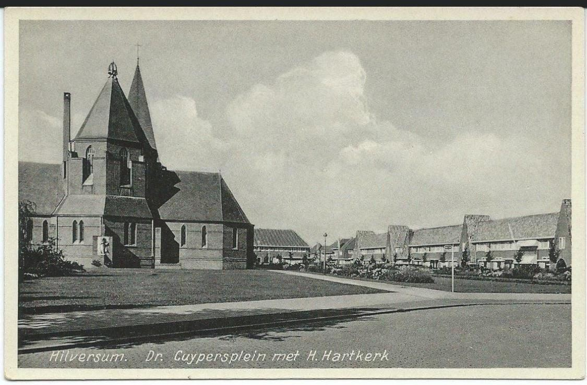

Dr. P.J.H. Cuypersplein · Hilversum Oost
Over 't Spoor
Van stuifzand en fabrieksrook tot het hart van de mediastad
Het plein voor uw deur lijkt een rustig hoekje van Hilversum. Toch ligt het op een van de meest veranderlijke stukken grond van het dorp, en een paar straten verderop begon op 21 juli 1923 de Nederlandse radio.
Boven: de buurt vanuit de lucht, 1931. Midden de H. Hartkerk op het Cuypersplein, daarachter begint nog de open heide.
Misschien bent u hier net komen wonen. Veel bewoners van het Cuypersplein en de straten eromheen komen van buiten Hilversum en kennen het verhaal van hun eigen stoep niet. Dat verhaal is bijzonder. Honderd jaar geleden was dit de rafelrand van het dorp: open heide, fabrieksrook en een stoomtram die rammelend naar Laren reed. Dit is hoe die rand veranderde, en hoe uw plein erin past.
Het plein
Een kerk, een groen en negentien huizen
Het Cuypersplein is geen toevallig rijtje woningen, maar een ontworpen geheel uit het eind van de jaren twintig. In het midden, in een groen plantsoen, staat de Heilig Hartkerk, in 1928 gebouwd naar ontwerp van architect H.W. Valk: robuust in baksteen, met gotische en romaanse trekken, en de eerste rooms-katholieke kerk in de arbeidersbuurt Over 't Spoor. Eromheen verrees in 1929 een blok van negentien middenstandswoningen van de Hilversumse architect Jan van Laren, in de stijl van de Amsterdamse School. Twee verschillende handen uit dezelfde jaren, een traditionalist en een expressionist, kijken zo over het groen naar elkaar. Op de hoek was van begin af aan ruimte voor een winkel ingepland. Veel bewoners herinneren zich daar de Albert Heijn, bekend van foto's uit de jaren '50 en '60.
Bij dit ensemble hoorde nog een vierde gebouw. Aan de rand van het plein, op nummer 1, opende op 3 september 1928 de Willibrordusschool, naar ontwerp van architect Nieuwenhuys: een katholieke jongensschool van acht lokalen, opgericht onder dezelfde nieuwe H. Hartparochie als de kerk. Kerk, woningen en school kwamen zo in nagenoeg hetzelfde jaar tot stand. De school is er niet meer; in 1994 maakte zij plaats voor een kleinschalig appartementencomplex. Toch is het verleden niet helemaal uitgewist: de ronding bij de entree van het complex verwijst nog naar het oude schoolgebouw dat hier bijna zeventig jaar stond.
En de naam? Het plein heet naar Pierre Cuypers (1827–1921), de architect van het Rijksmuseum en het Centraal Station, en van Hilversums eigen baken, de Sint-Vituskerk uit 1892 met haar toren van 98 meter. Daar zit een lus in: Cuypers inspireerde de generatie van de Amsterdamse School waarin uw huizen zijn gebouwd. De naamgever van het plein is zo de geestelijke grootvader van de stijl van het plein, ook al staat zijn eigen kerk een eind verderop.




Stuifzand
Heide, schapen en zand
Ga terug naar 1880 en hier was vrijwel niets. De oostkant van Hilversum, in de volksmond over 't spoor, was het laagste en armste deel van het dorp: open heide en stuifzand, gemene grond van de Erfgooiers waar eeuwenlang schapen liepen. De Erfgooiers waren de boeren met een eeuwenoud, erfelijk recht om hun vee te weiden op de gezamenlijke gronden van het Gooi. Het Gooi leefde van schraal zand en schapenhouderij. Dat dit lege stuk binnen vijftig jaar zou vollopen met fabrieken, een tram en honderden woningen, had toen niemand durven voorspellen. Op de luchtfoto bovenaan, uit 1931, ziet u dat kantelmoment: de buurt is er al, maar de heide begint nog meteen achter de laatste daken.

Het spoor
Eén rails verandert alles
De verandering begon met een spoorlijn. In 1874 kreeg Hilversum de Oosterspoorweg, en ineens lag Amsterdam binnen handbereik. Het dorp groeide explosief. Maar het gemeentebestuur wilde geen vuile industrie en geen stoom in het nette centrum, dus alles wat rook en lawaai maakte werd naar de overkant van het spoor geduwd. Zo ontstond hier, op het goedkope zand, de werkende, rokende oostkant van de stad.
In 1874 was het spoor in Nederland nog jong: de allereerste lijn, tussen Amsterdam en Haarlem, was pas vijfendertig jaar oud, en treinreizen was voor de meeste mensen nog een nieuwigheid. Het Gooi gold tot dan toe als een arme, afgelegen streek van schaapherders en boekweittelers. Dat juist Hilversum een station kreeg, was geen erkenning van het dorp zelf: de Hollandsche IJzeren Spoorweg-Maatschappij legde de Oosterspoorweg aan als doorgaande route van Amsterdam naar Amersfoort en Zutphen, én om — buiten haar grote concurrent om — een eigen verbinding met Utrecht te krijgen. Hilversum lag simpelweg op die strategische lijn. Het dorp werd niet belangrijk gevónden; het werd belangrijk gemáákt door het spoor.

De fabrieken
Hoe bouwland fabriek werd
Tot in de jaren 1870 was dit akkerland langs de zandweg naar Laren. Eén stuk bouwland aan die weg werd het begin van de industrie: hier stond de ijzergieterij van de firma Taphorn, later overgenomen door J. Ensink. Ensink kocht de grond in 1880 en breidde zijn gieterij in 1889 uit met een woonhuis, kantoor en fabrieksloods, op de hoek van de Laarderweg (nu Larenseweg) en de Jan van der Heijdenstraat. Toen er in 1881 tramrails pal langs zijn terrein kwamen, liet hij meteen een zijspoor aanleggen, zodat cokes en ruwijzer per rail werden aangevoerd en de zware gietijzeren producten werden afgevoerd.
De Hilversumsche IJzergieterij Ensink goot het sierijzer waarmee de villa's van het Gooi werden opgesierd: ronde gevelramen, hekwerken, veranda's, en de gietijzeren lantaarnpalen met het stempel van de gieterij die nog lang in de stad stonden. Ook de ijzeren drinkbakken voor paarden op straat kwamen hiervandaan. In 1896 verzekerde Ensink zijn vijftig arbeiders op eigen kosten tegen invaliditeit en ongelukken, voor die tijd opmerkelijk. De gieterij draaide bijna negentig jaar, tot 1973; daarna verdween de fabriek en kwam er kantoor- en woningbouw.
Leuk weetje · de Jumbo
Op de hoek van de Larenseweg en de Jan van der Heijdenstraat, waar nu de Jumbo staat, stond de ijzergieterij die het sierijzer voor de Hilversumse villa's goot.
Ensink kreeg gezelschap. In 1885 bouwde de gemeente haar gasfabriek aan de Kleine Drift, op een strook stuifzand buiten de bebouwde kom; een particuliere voorganger leverde sinds 1860 al gaslicht. Daaromheen verrezen een margarinefabriek, de verffabriek Ripolin, kachelfabrikant E.M. Jaarsma, een tapijtweverij, de sigarenfabriek Oenen & Mansen (1904), rijtuigenfabriek Bokhorst en chocoladefabriek Splendid (1922). De Hollandsche IJzeren Spoorweg bouwde huizen voor haar personeel, en na 1900 kwamen er winkels, scholen en een badhuis.
De gasfabriek groeide mee met de stad, met steeds grotere gashouders; de laatste, uit 1933, was 40 meter hoog en van verre te zien. Voor de aanvoer van kolen werd een eigen spoorlijntje vanaf het station naar de fabriek doorgetrokken.


De tram
De Gooische Moordenaar
Dwars langs de buurt reed de Gooische Stoomtram, in de volksmond de Gooische Moordenaar, een bijnaam die hij dankte aan de vele dodelijke ongelukken: in totaal 117. Vanaf 1882 reed hij vanuit Laren over de Larenseweg de stad in. Ook hem hield het gemeentebestuur buiten het centrum, dus de tram eindigde aan de oostkant van het spoor.
Komend uit Laren stopte hij bij een halte aan de Jan van der Heijdenstraat en reed daarna achter de huizen langs naar zijn eindpunt bij de Noorderweg. Het oude stationsgebouw staat er nog, jarenlang in gebruik als busstation. De laatste tram reed in 1947.

Een zijpad
Het kapperszaakje
Het kleurige houten kapperszaakje aan het Den Uylplein was ooit een politiepost, in 1916 ontworpen door W.M. Dudok en waarschijnlijk zijn allereerste gebouw in Hilversum. Het stond eerst bij het oude raadhuis op de Kerkbrink en werd in 1933 in zijn geheel hierheen verplaatst, naar wat toen nog het Erfgooiersplein heette. Sinds 1947 zit er een kapper in.
De aanleiding was veelzeggend: de buurt over 't spoor gold rond 1915 als probleemwijk, en bewoners vroegen de burgemeester per brief om politietoezicht.

Wonen
Huizen voor de buurt
Wie in die fabrieken werkte, moest ook ergens wonen. De woningbouwverenigingen pakten dat op. Aan de Johannes Geradtsweg bouwde de vereniging van Erfgooiers vanaf 1917 haar eerste complex. De weg is vernoemd naar Johannes Geradts, oprichter van het dagblad De Gooi- en Eemlander, en wordt tot vandaag vaak foutief "Johan" genoemd. De buurt Over 't Spoor werd bovendien een proeftuin van de wereldberoemde gemeentearchitect Willem Dudok, die voor Hilversum in totaal vijfentwintig woningbouwcomplexen ontwierp (1919–1956) en hier verschillende van zijn vroege uitbreidingen bouwde. De woningen aan de Jan van der Heijdenstraat horen bij zijn tiende complex (1927–1928): achtenveertig eengezinswoningen die zich ook uitstrekten over de Merel-, Minckelers- en Spreeuwenstraat. Bij een grootschalige renovatie aan het begin van deze eeuw is een groot deel ervan gesloopt en vervangen door nieuwbouw in Dudok-stijl, uitgevoerd door woningcorporatie Dudok Wonen. Stukje bij beetje liep het lege zand vol met straten, tuinen en mensen.


Te bezoeken · Dudok om de hoek
In Hilversum Noord richting station Mediapark ligt de Noorderbegraafplaats, die Dudok tussen 1927 en 1930 als een streng geometrisch geheel ontwierp — en die ook zijn eigen laatste rustplaats werd. Samen met zijn vrouw Aletta ligt hij er in een door hemzelf ontworpen dubbelgraf van Carrara-marmer, met hun namen in goud en een klein hartje.
Het signaal
Waar Hilversum begon te zenden
Het grootste verhaal van de buurt staat op de Jan van der Heijdenstraat. Daar opende in 1921 de Nederlandsche Seintoestellen Fabriek, de NSF, opgericht door reders die in de Eerste Wereldoorlog geen seintoestellen voor hun schepen meer uit het buitenland konden krijgen. En hier gebeurde iets dat het hele land zou veranderen: op 21 juli 1923 verzorgde de NSF de eerste Hilversumse radio-uitzending, gepresenteerd door Willem Vogt. Het was het begin van het Nederlandse omroepbestel.
Op 20 januari 1924 klonk het eerste gesproken woord, een toespraak van schrijfster Carry van Bruggen. Omroepen als NCRV, VARA, KRO en VPRO huurden zendtijd bij de fabriek, en dáárom kwamen ze allemaal naar Hilversum. De mediastad is hier, een paar straten van uw plein, geboren. De NSF groeide uit tot de grootste werkgever van het dorp, van honderd man in 1921 naar duizenden, met een schoorsteen met de letters NSF die van verre te zien was.
De fabriek had ook een oorlogsgeschiedenis. Het personeel speelde een hoofdrol bij de Februaristaking van 1941, en een verzetsgroep bouwde er zenders in koffers voor agenten die vanuit Engeland werden gestuurd, bekend van Soldaat van Oranje. Tegelijk kende de fabriek een schaduwkant: na de bevrijding werden enkele tientallen medewerkers ontslagen wegens hun houding tijdens de bezetting.

Tussendoor
De straten als wie-is-wie
De hele buurt is vernoemd naar bouwers en geleerden. Eén straat valt op door een lokale held.
- Cuypersarchitect van het Rijksmuseum en de Hilversumse Sint-Vitus
- Hendrick de Keyserbouwmeester en beeldhouwer van de Hollandse renaissance; zijn laan grenst direct aan het plein
- Simon Stevinwiskundige en ingenieur
- Calandingenieur en waterbouwkundige, bekend van het Calandkanaal
- Van Leeuwenhoekmicroscopist en ontdekker van micro-organismen
- Jan van der Heydenuitvinder van de brandslang en pionier van straatverlichting
- Cornelis Drebbeluitvinder van de eerste bestuurbare onderzeeër; ook zijn straat grenst direct aan het plein
- Minckelerspionier van het gaslicht, niet toevallig vlak bij de gasfabriek
- Joh. Geradtsde uitzondering: oprichter van De Gooi- en Eemlander, lokaal raadslid
Van rook naar groen
De fabrieken worden weer woningen
Het einde van de industrie werd het begin van het wonen van nu. Het ene na het andere fabrieksterrein in de oostkant krijgt een tweede leven als woon-, werk- of zorgplek. Zes voorbeelden, allemaal op loopafstand van uw plein.
Op het terrein van de Seintoestellen Fabriek kwamen woningen en winkelcentrum Seinhorst. Het gerenoveerde Philips-kantoorgebouw naast de Morgenster kerk is nog een originele herinnering aan het oude fabrieksterrein.
Bijna vijftig jaar verwerkte de Verenigde Gooise Melkbedrijven hier de melk voor het hele Gooi. Onder de karakteristieke schaaldaken wonen, werken en leren nu mensen, met de oude schoorsteen nog fier overeind.
Na vertrek van de brandweer naar de nieuwe locatie aan de Kamerling Onnesweg en een grondige bodemsanering verrees hier de wijk Villa Industria (2016). De drie ronde woontorens op de hoek van de Jan van der Heijdenstraat verbeelden de oude gashouders.
Ooit de eerste merkverffabriek van Nederland en korte tijd de grootste van Europa, rond 1970 vertrokken naar Amersfoort en Barneveld. Philips gebruikte de hallen nog tien jaar; na de sloop in 1985 groeide dit Lucent-terrein uit tot de stedelijke woonbuurt van nu.
Waar ooit de ruitvormige keelpastilles werden gemaakt, komt een woon-werkcomplex rond een hof. De vorm van het wybertje keert terug in de baksteen en de balkons.
Het monumentale fabriekspand, in 2020 zwaar beschadigd door brand, wordt nu een woonzorglocatie met zo'n zeventig zorgwoningen voor ouderen, rond een nieuwe groene binnentuin.
En uw plein zelf? Dat gaat sinds 2026 zijn volgende fase in, met de vergroening van de speel- en ontmoetingsplek. De rafelrand van honderd jaar geleden is een plek geworden om te blijven.
Colofon
Over deze website
Deze website is zonder winstoogmerk opgezet, ter lering ende vermaak. Ze wil bewoners en geïnteresseerden op een toegankelijke manier kennis laten maken met de geschiedenis van het Cuypersplein en de buurt Over 't Spoor. Het tekst- en beeldmateriaal is met zorg samengesteld voor dit zuiver educatieve en niet-commerciële doel.
Mocht er onverhoopt sprake zijn van een mogelijke schending van auteurs- of beeldrechten, neem dan contact op met de beheerder van de site via beheerder@voorbeeld.nl. Het betreffende materiaal wordt dan in overleg aangepast of verwijderd.